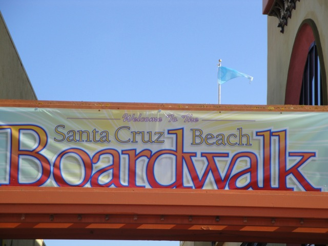
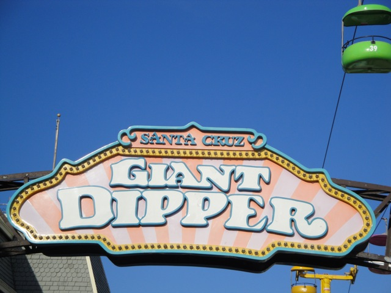
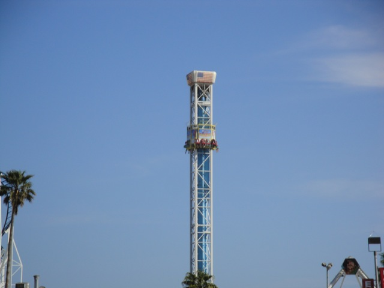
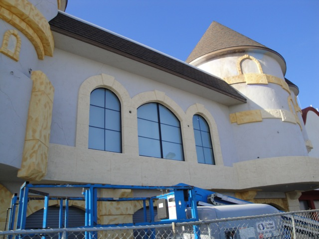
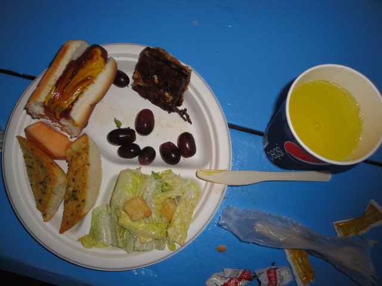
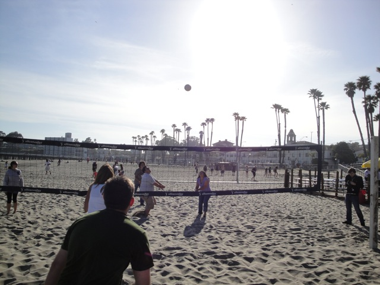

| |
Santa Cruz Beach Boardwalk Review

The Santa Cruz Beach Boardwalk is an interesting park. It's mainly just your typical seaside boardwalk. However, I haven't gotten much of a chance to explore it in full detail. But from walking around and exploring the place, I can safely say that the Santa Cruz Beach Boardwalk kicks ass!! Now my visits mainly consist of the days where its crowded and I'm just there for credits, half the stuff was closed, the visit from many years ago that I barely remember, and the visit where I just walked around and explored the place while riding a few things. And yeah. This place kicks ass. I was a lot of fun, had a really nice atmosphere, and was totally awesome. I totally want to come back and just take it easy and relax here. I know it's not perhaps the greatest seaside amusement park of all time as I can definetly think of a couple better ones. But hey. I really like the park. It's got some good rides, and a great atmosphere. Check out the Santa Cruz Beach Boardwalk if you're ever in the Bay Area.
Rollercoasters
There is a link to a review of all the Rollercoasters at the Santa Cruz Beach Boardwalk.
Top Coasters
Giant Dipper Review

Fun Coasters
Undertow Review

Kiddy Coasters
Sea Serpent Review

Flat Rides
Here are the reviews of all the Flat Rides at the Santa Cruz Beach Boardwalk. First off, their Double Shot. I know I'm a fan of S&S Towers and the Double Shot versions are a particular favorite of mine, but man. This one was F*CKING WEAK!!! I mean seriously!!! I thought I was on Maliboomer until I realized there were no screamshields!!! Their carousel here is also one of the ones where you capture the gold rings. So yeah. That was a ton of fun. Even if I suck at getting the gold rings. I also did their Rock O Plane, which like all Rock O Planes, is just a ton of fun. I'm not sure which flat rides I did at the Santa Cruz Beach Boardwalk in my 2000 visit, but these are the ones that I know I did. They also had a ride called Typhoon, which was basically a Kamakazie Clone. At the time, I didn't like it because of the hangtime, but now, I'd find it a very fun ride. And finally, I know I rode the skyride. And hey. The skyride here is 1000 times better than the one at Indiana Beach because it has no stupid and idiotic rules on it. However, there are many more flat rides at the Santa Cruz Beach Boardwalk. They also have a Chance Fireball Frisbee, a Crazy Surf, an indoor break dance, a round up, chairswings, a cliffhanger, a tilt a whirl, thunder bobs, a tornado, a ferris wheel, and bumper cars.

Yeah its fun, but man. It could be so much better.
Dark Rides
Yes, the Santa Cruz Beach Boardwalk does have a dark ride. And no, its not of extremely high quality. I know they just recently redid their Haunted Castle. And while I don't want to admit that it was...it was corny. Now don't get me wrong. I still liked it. I liked the goofiness of it and the spiral lift at the end. And its much better than the sh*tty Zombie style fair dark rides that are just laughable. It's fun enough.

Here is their Haunted Castle during it's makeover.
Water Rides
I did manage to ride the log ride during my 2000 visit. However, from my memory, while I did have fun, it definetly seemed to not be a very good log flume. I suppose I'd recommend it if it's a hot day since it does get you wet and will cool you off, but it's definetly not a Top 10 Water Ride. Not even close.
Dining
I have no idea what I ate in 2000, but during Bay Area Bash, they served us a very good buffet. Not only were their hot dogs very very good, but they also served us lots of other tasty stuff including garlic bread, salad, fruit, and brownies. And it was all much better than the typical amusement park crap. But from what I've heard, this is only scratching the surface. There is tons of other very good and above average food at the Santa Cruz Beach Boardwalk. So yeah. Thumbs up from Incrediblecoasters.

Much better than the average typical amusement park crap.
Theming and Other Attractions
Here are the reviews of all the other stuff at the Santa Cruz Beach Boardwalk. Well, for theming, there's no special lands of anamatronics at the Santa Cruz Beach Boardwalk. So there's nothing like Disneyland here. However, the park does have a great atmosphere as a seaside park and has a great setting on the beach. So this pretty much counts as the rides theming. As for other attractions to do, I don't remember anything from 2000 and we didn't spend much time in the park other than for Giant Dipper ERT. So I'm not very sure of what you can do inside the Santa Cruz Beach Boardwalk, but knowing the place, I'd imagine that they lots of other stuff for you to do. And then, of course, there's the beach. You can definetly go to the beach. Hell, before our Giant Dipper ERT, we went onto the beach and played a very pathetic game of Volleyball. That was a lot of fun. So yeah. There's lots of other stuff to do at the Santa Cruz Beach Boardwalk.

We can't play Volleyball for sh*t.
In Conclusion
The Santa Cruz Beach Boardwalk is a very nice seaside park with some decent coasters, a very big flat ride collection, an interesting dark ride, and a great location right alongside the beach. So even if all the rides are getting old, just head over to the beach and hang out there. Make sure you don't forget about the Santa Cruz Beach Boardwalk when talking about the Northern California Theme Parks and only focus on Six Flags Discovory Kingdom and California's Great America. It's got a great wooden coaster, and lots of fun for everyone.
Enthusiast FAQs.
*Are there kiddy coaster restrictions? - No. You can ride Sea Serpent.

Tips
*Don't treat the Santa Cruz Beach Boardwalk as a credit whore stop. Really appreciate the park.
*Get an unlimited ride wristband.
*Have Fun!!!!
Theme Park Category:
Piers & Boardwalks
Location
Santa Cruz, California, USA
Last Day Visited
April 26, 2015
Video
I have yet to make a video for the Santa Cruz Beach Boardwalk. I'll have to do that soon.
Complete Update List
2015
California's Great America 2015
2012
Glass Beach Road Trip
2010
Bay Area Bash
Here's a link to the parks website.
Home
|